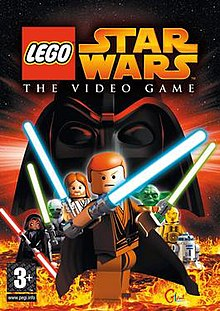

This is a masterpiece. Technically and artistically, it's the best game I've ever played.

The story is fire! I played this game and achieved 1000G on Xbox because it's a unique RPG. CD Projekt Red did an amazing job. Even with the bugs — which were fixed over time — the game delivers all the emotions you’d expect from a great story-driven experience.

My childhood game. There's no other that could take its place but Lego Star Wars. All the levels, characters, villains were incredile. Everything that could be achieved at that time was done. It was truly ahead of its time.
